<ion-content [fullscreen]="true">
  <div class="logo-container">
    
  </div>
  <div class="carta">
    
  </div>

  <div class="button-container">
    <ion-button class="gradient-button" (click)="irMenu()" mode="md">
      Entrar
      
    </ion-button>
  </div>
 
</ion-content>
